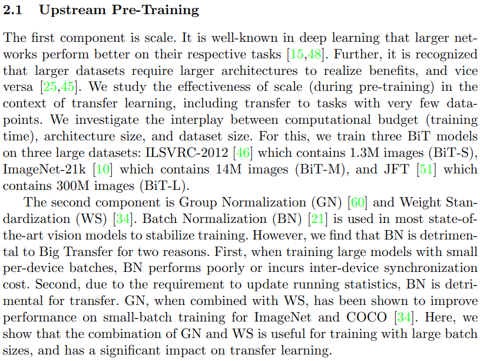
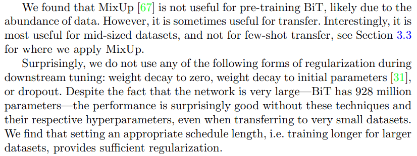
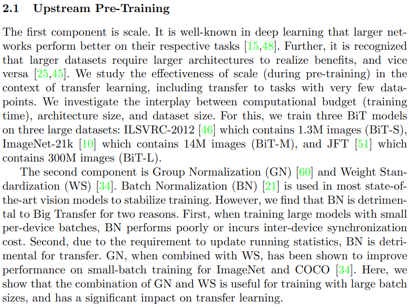
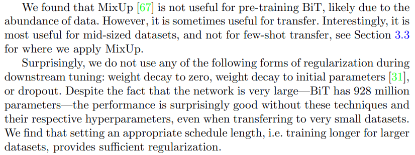

Big Transfer (BiT): General Visual Representation Learning
Haiku
Pick a huge model (ResNet152x4),Pretrained on huge dataset (JFT-300M),
But with new heuristics.
Take the pretrained large model,
Finetune on a smaller dataset,
= SOTA!
Big datasets?
Don’t use batch norm,
use group norm and weight std.
Big datasets?
Don’t use MixUp
Use it for smaller datasets.
Abstract
Transfer of pre-trained representations improves sample efficiency and simplifies hyperparameter tuning when training deep neural networks for vision. We revisit the paradigm of pre-training on large supervised datasets and fine-tuning the model on a target task. We scale up pre-training, and propose a simple recipe that we call Big Transfer (BiT). By combining a few carefully selected components, and transferring using a simple heuristic, we achieve strong performance on over 20 datasets. BiT performs well across a surprisingly wide range of data regimes — from 1 example per class to 1 M total examples. BiT achieves 87.5% top-1 accuracy on ILSVRC-2012, 99.4% on CIFAR-10, and 76.3% on the 19 task Visual Task Adaptation Benchmark (VTAB). On small datasets, BiT attains 76.8% on ILSVRC-2012 with 10 examples per class, and 97.0% on CIFAR-10 with 10 examples per class. We conduct detailed analysis of the main components that lead to high transfer performance.
Paper Authors
Alexander Kolesnikov,
Lucas Beyer,
Xiaohua Zhai,
Joan Puigcerver,
Jessica Yung,
Sylvain Gelly,
Neil Houlsby,
Authors Affiliation
Google Research
ImageNet Top-1 Acc
87.54%
CIFAR-10 Accuracy
99.37%
CIFAR-100 Accuracy
93.51%
VTAB Accuracy
76.29%
Tags
Image Classification;
Few Shot Learning;
Level
Advanced
 


